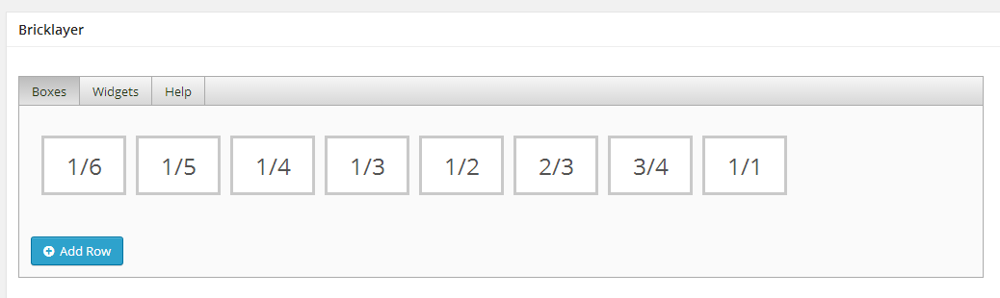
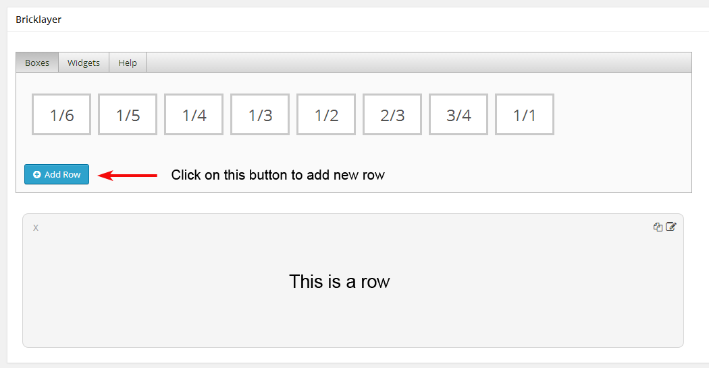
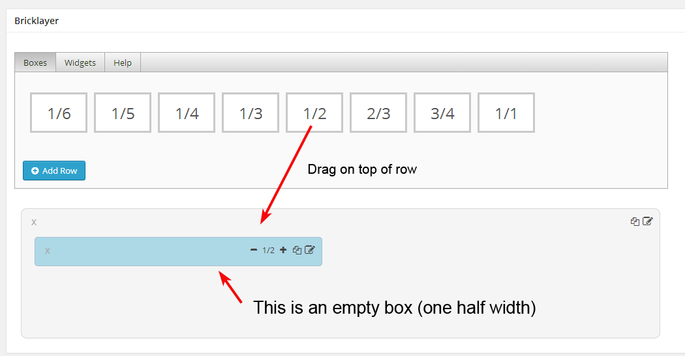
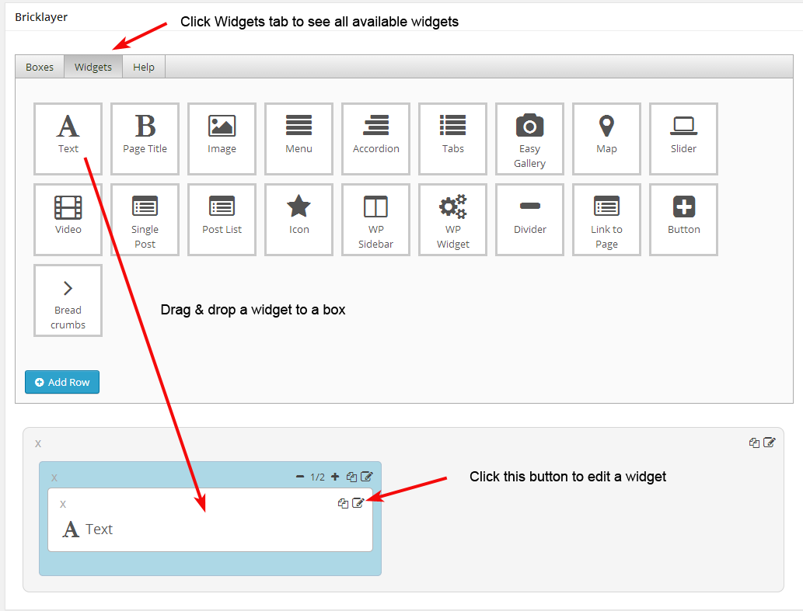
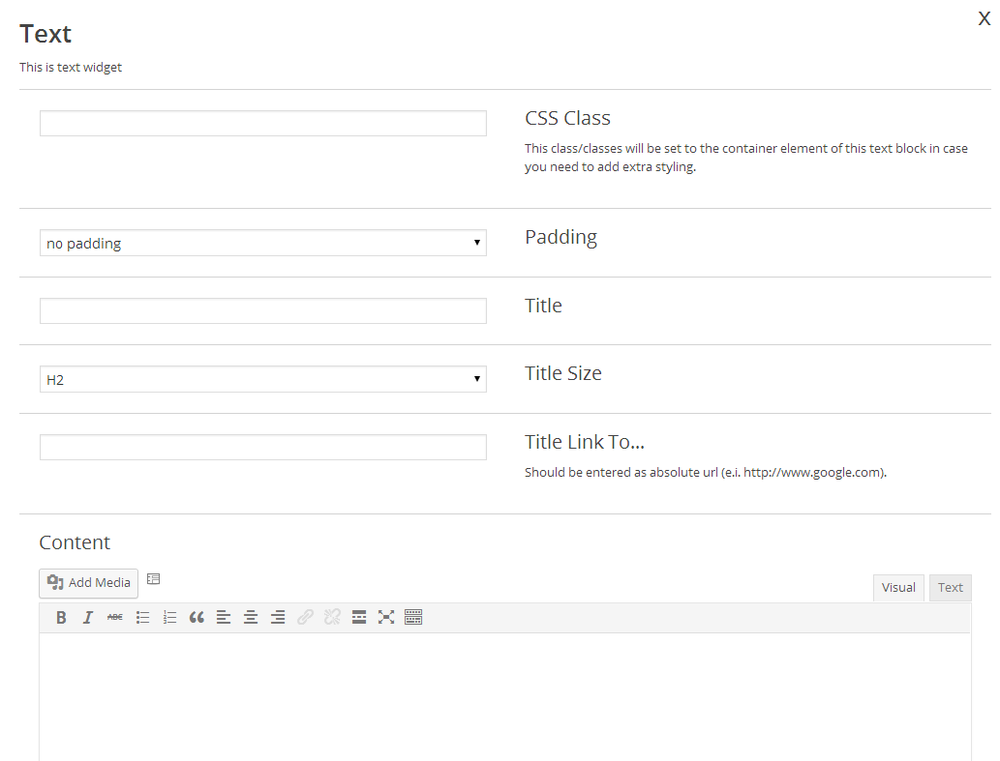
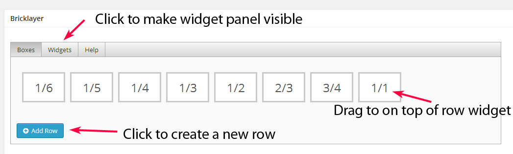
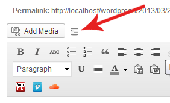

Created: 31/01/2014
By: Parmenides
Email: parmenides.themes@gmail.com
Thank you for purchasing my plugin. If you have any questions that are beyond the scope of this help file, please feel free to email via my user page contact form here. Thanks so much!
Bricklayer is a widget based content builder Wordpress plugin. It is build on top of a model that resembles Wordpress widget system so it is easy to use. It also offers a very similar way of registering new widgets to developers.
This part of the documentation is going to cover, in a step by step instruction the installation of WP Plugins on your WordPress blog in general.
Should you ever experience slight upload problems then please stay calm, simply use an FTP program to access your blog, then browse to /public_html/wp-content/plugins and upload the unzipped version there. Then check out the Plugin page and activate the plugin.
You installed the plugin and now what? Well, plugin is installed and ready to go. By default Bricklayer Content & Layout Builder Plugin is enabled for building pages.
Bellow the content area you will see a section named Bricklayer.

Rows, Boxes & Widgets are the main building blocks.
Click on Add Row button and you will insert a new empty row.

To do that just drag & drop a box to a row.
Note that boxes have width, so you need to drag a box with the width you need. You can also change the width of the box by clicking on a plus or minus sign after you drag it to a row.

To do that you need to click on a Widgets tab.

You can put however many widgets you need in each box.
When you click on Edit Widget Button you will be presented with settings page for that widget.

This is where you configure the widget: Enter any data the widget needs.When you finish with editing the widget press Save button. After you finish editing all widgets save Wordpress page.
Each widget has it's own settings and you need to edit each widget you use and populate it with you custom settings.
After installation you will see Bricklayer link at the bottom ot the main admin menu. When you click on that link you'll be taken to Bricklayer plugin main settings page. Here are the global settings for the plugin which, most of them, can be overwritten in the Layouts. Layouts and Templates are two extra sections this plugin adds to admin menu.
Layout is a html and css template which surrounds the page/post content. For example, on a web page most likely header, footer and sidebar would be considered to belong to a layout and in the middle of the page you would have the content. This Layouts section allows you to predefine layouts yourselfs which you can later assign to a page. Building a layout is identical to building a page with Bricklayer plugin, so continue reading.
This functionality is not turned on by default. It has to be turned on in Bricklayer settings page.
Templates represent peaces of Bricklayer building blocks which can be imported into a page, a layout or even in another template. Templates are created from the Templates section or from any Bricklayer builder using the "save as template" functionality.
This functionality is not turned on by default. It has to be turned on in Bricklayer settings page.
These are global plugin settings and many of these settings can be overwritten in a layout.
This will exclude theme header and footer html for all layouts, unless overriden in layout.
This will set container width for all layouts, unless overriden in layout. Set the container width in pixels. Please enter number only. By default it is set to 1200.
This will set container top padding for all layouts, unless overriden in layout. Set the container top padding in pixels. Please enter number only.
This will set container right padding for all layouts, unless overriden in layout. Set the container right padding in pixels. Please enter number only.
This will set container bottom padding for all layouts, unless overriden in layout. Set the container bottom padding in pixels. Please enter number only.
This will set container left padding for all layouts, unless overriden in layout. Set the container left padding in pixels. Please enter number only.
Check if you want to use background color.
Color picker.
Uncheck this if you dont want to load Font Awesome (maybe a theme is loading it, so we dont want to load it twice).
Check to enable Layouts and Templates.
Check to use Bricklayer Builder With Posts.
Check to use Recaptcha. If you enable Recaptcha you need to enter Recaptcha public and pravate keys bellow.
Pipe separated list of custom thumbnail size names and sizes. Please use this format: custom-thumbnail-size:500x500|another-custom-thumbnail-size:320x150. No spaces allowed. Thumnail Sizes you register here will only be applied to any new image from now on. If you wish to apply them on any of the old images we recomend using Regenerate Thumbnails Plugin.
These are the main building blocks. First, we need a row. Inside it we put boxes (they represent columns). And in boxes we put widgets.
These panels will appear in page editor under the content area.
To manipulate these Bricklayer building blocks there are several icons which allows you to edit, delete, duplicate by clicking on them and by drag and drop. Boxes are different in one respect: only boxes have width. The width of the box is set when the box is created and can at any time be changed by clicking on plus or minus sign on the box.
This class/classes will be set to the container element of this text block in case you need to add extra styling.
Do you want this row to take up a 100% of the page in width.
Do you want to color the background of this row.
A color picker for the color.
Set background image. Please match the image width with the width of the row.
Do you wish to use "parallax" effect.
The speed of parallax effect.
Do we wrap the contents of this row. If not wrapped it will add nothing. This is especially good for use when creating layout "content" widget.
Row padding.
This class/classes will be set to the container element of this text block in case you need to add extra styling.
Do you want to color the background of this row.
A color picker for the color.
Do we wrap the contents of this row. If not wrapped it will add nothing. This is especially good for use when creating layout "content" widget.
Box padding.
This class/classes will be set to the container element of this text block in case you need to add extra styling.
Here you can select an H tag for your title.
If this is entered, the title will be a link. Should be entered as absolute url (e.i. http://www.google.com).
Standard tinymce content.
This select decides if a background color will be used or not.
Colorpicker for background color.
The alignment of the text.
Widget padding.
This class/classes will be set to the container element of this text block in case you need to add extra styling.
Marker Latitude.
Marker Longitude.
Map zoom level.
The hight of a map can be set here. As for the with, it assumes the parent width.
An image for the custom marker.
This is the bubble content.
Widget padding.
This class/classes will be set to the container element of this text block in case you need to add extra styling.
Slide transition type: Horizontal, Vertical and Fade.
Should slide autoplay.
Are bullets visible.
Map zoom level.
Time between slides in miliseconds. Enter number only!
This is required for all items to be saved. Items have their forms which have additional settings for each item.
This is the bubble content.
Widget padding.
One important thing to make a gellery fit better is to use padded instead of double-padded on a box which contains the gallery
This class/classes will be set to the container element of this text block in case you need to add extra styling.
All widget settings are self explanatory and are all provided with necessary info in the widget itself.
To use any of Wordpress widgets with Bricklayer plugin all you need to do is drop one instance of the plugin you need to Bricklayer siderbar in Admin/Appearance/Widgets.
When editing a post or a page click the icon marked in the image bellow to set up the form for current post or page.

You can view messages received from the form on your page in Bricklayer/Form Feedbacks section in the admin area.
Bricklayer is a widget based content builder Wordpress plugin. It is build on top of a model that resembles Wordpress widget system so it is easy to use. It also offers a very similar way of registering new widgets to developers.
To create a new widget you need to exted the CbpWidget class
class PrefixExampleWidget extends CbpWidget
{
public function __construct()
{
parent::__construct(
/* Base ID */'prefix_example_widget',
/* Name */ 'Content', array('description' => 'This is Example widget.', 'icon' => 'fa fa-list-alt fa-3x'));
}
// all elements must be listed here to be displayed in the form
public function registerFormElements($elements)
{
$elements['title'] = '';
return $elements;
}
// the widget form in the Bricklayer builder
public function form($instance)
{
// form element
CbpWidgetFormElements::text(array(
'name' => $this->getIdString('title'),
'value' => $instance['title'],
'description_title' => $this->translate('Title'),
'description_body' => $this->translate('This is form element description.'),
));
}
// example sanitize method
// this method is called when saving a widget form
public function sanitize(&$attribute)
{
switch ($attribute['name']) {
case CBP_APP_PREFIX . 'prefix_title':
case CBP_APP_PREFIX . 'prefix_link_text':
$attribute['value'] = sanitize_text_field($attribute['value']);
break;
case CBP_APP_PREFIX . 'prefix_number_of_characters':
if (!filter_var($attribute['value'], FILTER_SANITIZE_NUMBER_INT)) {
$attribute['value'] = 200;
}
break;
}
return parent::sanitize($attribute);
}
// this is what is displayed on front end
public function widget($atts, $content)
{
}
}
There are two methods available CbpWidgets::registerWidget($widgetClassName) and CbpWidgets::unregisterWidget($widgetClassName)
So to regiser the Example widget you need to do this:
CbpWidgets::registerWidget('PrefixExampleWidget');
If you don't like or just want to modify any of the default widgets use uregister mehod first and than register your version.
There is a way for you to register for each of existing widgets a key value pair where key will be used as a css classes on the wrapper of particular widget. Value is a display name in the select named "Select Styling". This can be done from the theme or any other plugin. You would need to add a filter like this:
add_filter('cbp_register_custom_css_classes', 'prefix_register_custom_css_classes');
/**
* Register custom css classes for widgets
*/
function prefix_register_custom_css_classes($widgetType)
{
$options = null;
if ($widgetType == 'cbp_widget_row') {
$options = array(
'' => 'No styling',
'custom-class-1 custom-class-2' => 'Header',
'custom-class-3' => 'Header inner',
);
}
return $options;
}
If you don't like or just want to modify any of the default widgets use uregister mehod first and than register your version.
Once again, thank you so much for purchasing this theme. As I said at the beginning, I'd be glad to help you if you have any questions relating to this theme. No guarantees, but I'll do my best to assist. If you have a more general question relating to the themes on ThemeForest, you might consider visiting the forums and asking your question in the "Item Discussion" section.
Parmenides